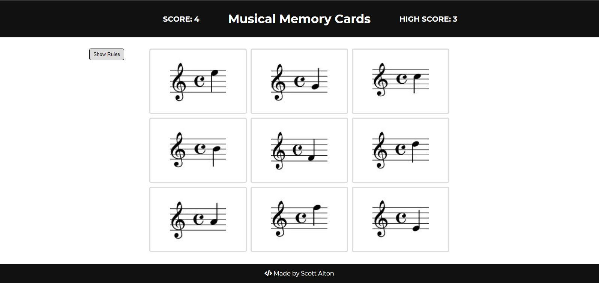
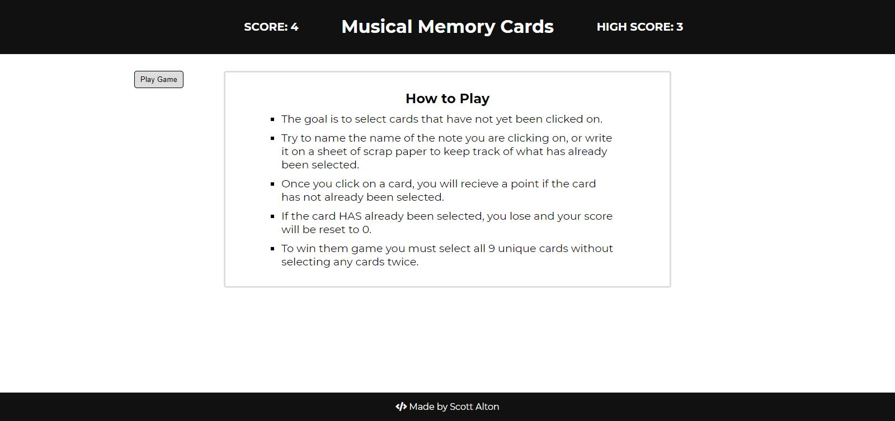

Today it felt good to build a project with React Hooks in just a few hours.
After spending a few days on the Resume Generator project with React, I figured that the next project using Hooks would require a similar time investment, with lots of struggles and research required. Once I got moving this morning though, things really moved along well and within 3 or 4 hours, I had built the project to include all requirements as a memory card game. I decided to use music notes as the focus for the memory game, and figured this could prompt ideas to build out a few other music theory training tools using React. Overall it felt really natural to clean up the CRA boilerplate code, plan out the components, and pass data between them. I think struggling through class components and dealing with state the hard way made me really appreciate the simplicity of Hooks, and it was also nice to avoid dealing with class-component lifecycle methods.
Here is a screenshot of the musical memory card game:
 